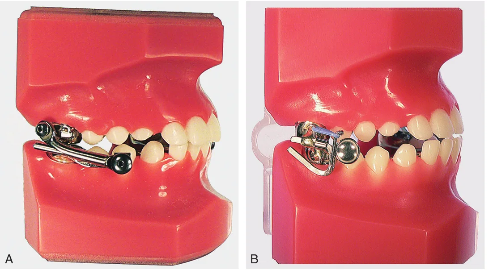

نسخه استخراجشده؛ ترجمه یا تأیید علمی انجام نشده است. وضعیت: captured
Herbst یک مکانیزم تلسکوپی ثابت است که میان قوس بالا و پایین بسته میشود و مندیبل را بهطور دائم در موقعیت جلوتر نگه میدارد.
مزیت تعیینکنندهاش یک جمله است: ۲۴ ساعت در روز فعال است — بیمار نمیتواند آن را در بیاورد.
💡 نتیجهی عملی مستقیم: مدت درمان معمولاً کوتاهتر از فانکشنال متحرک است، چون هیچ ساعتی از دست نمیرود. جایی که Twin Block شاید ۱۲ ساعت مؤثر در روز بدهد، Herbst ۲۴ ساعت میدهد.
👉 و به همین دلیل انتخاب اول در بیمارانی است که همکاریشان قابل اتکا نیست — گروهی که دقیقاً بیشترین نیاز را به درمان دارند و کمترین احتمال موفقیت با دستگاه متحرک.
⚠️ در مقابل، هزینهی بیشتری دارد، ساخت و نصبش پیچیدهتر است، و در صورت شکستن قطعات نیاز به ویزیت فوری دارد. همچنین برخلاف دستگاه متحرک، در صورت بروز مشکل نمیتوان آن را موقتاً کنار گذاشت.

Forsus جایگاه متفاوتی از Herbst دارد:
⚠️ اصل مهمی که به هر دو دستگاه مربوط میشود: هرچه بیمار به پایان رشد نزدیکتر باشد، سهم دندانی این دستگاهها بیشتر و سهم اسکلتی کمتر میشود. یعنی همان دستگاه در دو بیمار با سن اسکلتی متفاوت، دو کار متفاوت میکند.
👉 و چون Forsus معمولاً دیرتر در مسیر درمان به کار میرود، معمولاً در دورهای است که رشد باقیمانده کمتر است — پس انتظار اثر عمدتاً دندانی از آن، انتظار درستی است.
💡 اثر دندانی لزوماً بد نیست؛ فقط باید از پیش بدانی چه چیزی به دست میآوری تا انتظارت از پروفایل واقعبینانه بماند.
چهار عارضهی رایج این خانواده و مدیریت هرکدام:
| عارضه | مدیریت |
|---|---|
| پروکلاین شدن ثنایاهای پایین | سیم لینگوال، کنترل تورک، انکوریج اسکلتی |
| شکستن یا جدا شدن قطعات | ساخت مقاوم، آموزش بیمار دربارهی غذاهای سفت |
| زخم بافت نرم گونه | موم محافظ، تنظیم طول |
| ناراحتی مفصل در روزهای نخست | معمولاً گذرا؛ پایش لازم است |
👉 ردیف نخست شایعترین اثر جانبی این خانوادهی دستگاههاست و سازوکارش اجتنابناپذیر است: دستگاه روی دندانهای پایین تکیه دارد، پس بخشی از نیرویی که مندیبل را جلو نگه میدارد، ثنایاهای پایین را هم به جلو میراند. در بیوتایپ نازک، این باید جدی گرفته شود چون میتواند به تحلیل لثه بینجامد.
💡 مؤثرترین پیشگیری، توزیع نیرو روی واحد بزرگتر است: سیم لینگوال که دندانهای پایین را به هم میبندد، نیرو را بهجای چند ثنایا روی کل قوس پخش میکند.
⚠️ پیش از شروع، وضعیت لثهی قدام پایین را معاینه و ثبت کن — پس از بروز تحلیل، بازگرداندنش دشوار و اغلب ناکامل است.